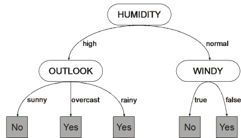
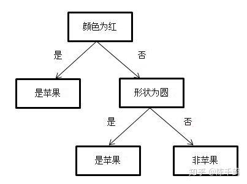
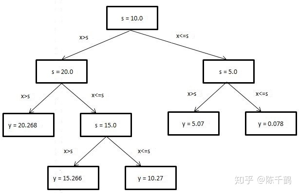

决策树 这一章的内容大致如下：
基本流程 ：决策树是如何决策的？决策树学习的目的是什么？如何生成一颗决策树？
划分选择 ：怎样选择最优划分属性？有哪些判断指标？具体是怎样运作的？
剪枝处理 ：为什么要剪枝？如何判断剪枝后决策树模型的泛化性能是否提升？预剪枝和后剪枝是怎样工作的？有什么优缺点？
连续与缺失值 ：如何把连续属性离散化？如何基于离散化后的属性进行划分？和离散属性有何不同？如何在属性值缺失的情况下选择最优划分属性？给定划分属性，如何划分缺失该属性值的样本？
多变量决策树 ：决策树模型的分类边界的特点是怎样的？多变量决策数是如何定义的？又是如何工作的？
基本流程 决策树（decision tree）是一种模仿人类决策的学习方法。举个例子，比方说买电脑，我们首先看看外观帅不帅气，然后再看看性能怎么样，还得看看价格如何，最终 经过一系列的判断做出 是否购买电脑的决策 。
一棵决策树可以分成三个部分：叶节点，非叶节点，分支。叶节点 对应决策结果 ，也即分类任务中的类别标记；非叶节点 （包括根节点）对应一个判定问题 （某属性=？）；分支 对应父节点判定问题的不同答案 （可能的属性值），可能连向一个非叶节点的子节点，也可能连向叶节点。
决策就是从根节点开始走到叶节点的过程。每经过一个节点的判定，数据集就按照答案（属性值）划分为若干子集，在子节点做判定时只需要考虑对应的数据子集就可以了 。
决策树学习的目的是为了产生一棵泛化能力强，即处理未见示例能力强的决策树 。
或者可以这样理解：
决策树算法采用树形结构，使用层层推理来实现最终的分类。决策树由下面几种元素构成：
根节点：包含样本的全集 内部节点：对应特征属性测试 叶节点：代表决策的结果 预测时，在树的内部节点处用某一属性值进行判断，根据判断结果决定进入哪个分支节点，直到到达叶节点处，得到分类结果。
这是一种基于 if-then-else 规则的有监督学习算法，决策树的这些规则通过训练得到，而不是人工制定的。
生成算法 决策树生成算法：
构建根结点：将所有训练数据放在根结点。 选择一个最优特征，根据这个特征将训练数据分割成子集，使得各个子集有一个在当前条件下最好的分类。若这些子集已能够被基本正确分类，则将该子集构成叶结点。 若某个子集不能够被基本正确分类，则对该子集选择新的最优的特征，继续对该子集进行分割，构建相应的结点。 如此递归下去，直至所有训练数据子集都被基本正确分类，或者没有合适的特征为止。 上述生成的决策树可能对训练数据有很好的分类能力，但是对于未知的测试数据却未必有很好要的分类能力，即可能发生过拟合的现象。
解决的方法是：对生成的决策树进行剪枝，从而使得决策树具有更好的泛化能力。 剪枝是去掉过于细分的叶结点，使得该叶结点中的子集回退到父结点或更高层次的结点并让其成为叶结点。 决策树的生成对应着模型的局部最优，决策树的剪枝则考虑全局最优。如果学习任意大小的决策树，则可以将决策树算法视作非参数算法。但是实践中经常有大小限制（如限制树的高度、限制树的叶结点数量），从而使得决策树成为有参数模型。
决策树的优缺点 优点 决策树易于理解和解释，可以可视化分析，容易提取出规则； 可以同时处理标称型和数值型数据； 比较适合处理有缺失属性的样本； 能够处理不相关的特征； 测试数据集时，运行速度比较快； 在相对短的时间内能够对大型数据源做出可行且效果良好的结果。 缺点 容易发生过拟合（随机森林可以很大程度上减少过拟合）； 容易忽略数据集中属性的相互关联； 对于那些各类别样本数量不一致的数据，在决策树中，进行属性划分时，不同的判定准则会带来不同的属性选择倾向；信息增益准则对可取数目较多的属性有所偏好（典型代表ID3算法），而增益率准则（CART）则对可取数目较少的属性有所偏好，但CART进行属性划分时候不再简单地直接利用增益率尽心划分，而是采用一种启发式规则）（只要是使用了信息增益，都有这个缺点，如RF）。
划分选择 在决策树模型中，我们不断进行判定的初衷是希望划分后需要考虑的可能更少 ，准确地说，是希望所得子节点的纯度 （purity）更高（也可以说是混乱程度更低）。
信息熵 （information entropy）是一种衡量样本集纯度的常用指标：
E n t ( D ) = − ∑ k = 1 ∣ Y ∣ p k l o g 2 p k Ent(D) = -\sum_{k=1}^{|\mathcal{Y}|}p_klog_2p_k E n t ( D ) = − k = 1 ∑ ∣ Y ∣ p k l o g 2 p k
一定要记得最前面的负号 ！！！其中 ∣ Y ∣ |\mathcal{Y}| ∣ Y ∣ p k p_k p k
信息熵越大，表示样本集的混乱程度越高，纯度越低 。
信息增益 信息增益（information gain）是 ID3算法 采用的选择准则，定义如下：
G a i n ( D , a ) = E n t ( D ) − ∑ v = 1 V ∣ D v ∣ ∣ D ∣ E n t ( D v ) Gain(D,a) = Ent(D) - \sum_{v=1}^{V}\frac{|D^v|}{|D|}Ent(D^v) G ain ( D , a ) = E n t ( D ) − v = 1 ∑ V ∣ D ∣ ∣ D v ∣ E n t ( D v )
它描述的是按某种属性划分后纯度的提升，信息增益越大，代表用属性 a a a 。其中 V V V a a a D v D^v D v v v v 条件熵 ，我们可以理解为它是先求出每个数据子集的信息熵，然后按每个数据子集占原数据集的比例来赋予权重，比例越大，对提升纯度的帮助就越大。
多个属性都取得最大的信息增益时，任选一个即可。
信息增益又称为互信息（Mutual information） 。
一个连续变量X的不确定性，用方差Var(X)来度量 一个离散变量X的不确定性，用熵H(X)来度量 两个连续变量X和Y的相关度，用协方差或相关系数来度量 两个离散变量X和Y的相关度，用互信息I(X;Y)来度量(直观地，X和Y的相关度越高，X对分类的作用就越大) （信息）增益率 增益率（gain ratio）是 C4.5算法 采用的选择准则，定义如下：
G a i n _ r a t i o ( D , a ) = G a i n ( D , a ) I V ( a ) Gain\_ratio(D,a) = \frac{Gain(D,a)}{IV(a)} G ain _ r a t i o ( D , a ) = I V ( a ) G ain ( D , a )
其中，
I V ( a ) = − ∑ v = 1 V ∣ D v ∣ ∣ D ∣ l o g 2 ∣ D v ∣ ∣ D ∣ IV(a) = -\sum_{v=1}^V\frac{|D^v|}{|D|}log_2\frac{|D^v|}{|D|} I V ( a ) = − v = 1 ∑ V ∣ D ∣ ∣ D v ∣ l o g 2 ∣ D ∣ ∣ D v ∣
一定要记得最前面的负号！！！IV称为属性的 固有值（intrinsic value） ，它的定义和信息熵是类似的，信息熵衡量的是样本集在类别上的混乱程度，而固有值衡量的是样本集在某个属性上的混乱程度。固有值越大，则该属性混乱程度越高，可能的取值越多 。
之所以要定义增益率是为了避免模型过份偏好用取值多的属性作划分 。这是使用信息增益作准则非常容易陷入的误区，比方说每个样本都有一个“编号”属性，这个属性的条件熵肯定是最小的，但如果选择了该属性作为根节点，那么构建出的决策树就没有任何意义了，因为这个模型根本不具备泛化性能。
注意了，C4.5并非直接选择增益率最高的属性 ，它使用了一个启发式 ：先从属性集中找到信息增益高于平均水平的属性作为候选，然后再比较这些候选属性的增益率，从中选择增益率最高的。
基尼指数 基尼指数（Gini index）是 CART算法 采用的选择准则，定义如下：
基尼值：
G i n i ( D ) = ∑ k = 1 ∣ Y ∣ ∑ k ′ ≠ k p k p k ′ = 1 − ∑ k = 1 ∣ Y ∣ p k 2 Gini(D) = \sum_{k=1}^{|\mathcal{Y}|}\sum_{k' \neq k}p_kp_{k'}\\ =1-\sum_{k=1}^{|\mathcal{Y}|}p_k^2 G ini ( D ) = k = 1 ∑ ∣ Y ∣ k ′ = k ∑ p k p k ′ = 1 − k = 1 ∑ ∣ Y ∣ p k 2
基尼指数：
G i n i _ i n d e x ( D , a ) = ∑ v = 1 V ∣ D v ∣ ∣ D ∣ G i n i ( D v ) Gini\_index(D,a) = \sum_{v=1}^{V}\frac{|D^v|}{|D|}Gini(D^v) G ini _ in d e x ( D , a ) = v = 1 ∑ V ∣ D ∣ ∣ D v ∣ G ini ( D v )
基尼值是另一种衡量样本集纯度的指标。反映的是从一个数据集中随机抽取两个样本，其类别标志不同的概率 。
基尼值越小，样本集的纯度越高 。
由基尼值引伸开来的就是基尼指数这种准则了，基尼指数越小，表示使用属性 a a a 。
剪枝处理 剪枝（pruning）是决策树学习算法应对 过拟合 的主要手段。因为决策树模型太强大了，很可能把训练集学得太好以致于把训练集本身的特性也给学习了（特别是属性数多于样本数的情况），所以去除掉一些分支是有必要的。
怎么判断剪枝有没有用呢？具体来说就是判断剪枝后模型的泛化性能有没有提升 ？这就涉及到第二章模型评估与选择 的内容了。不过这里不用做比较检验，我们需要做的首先是选定一种评估方法划分训练集和测试集 ，然后选定一种性能度量 用来衡量剪枝前后的模型在测试集上的效果。
预剪枝 预剪枝 （prepruning）是在决策树生成的过程中，对每个节点在划分前先进行估计，若当前节点的划分不能带来决策树泛化性能提升（比方说，划分后在测试集上错得更多了 / 划分前后在测试集上效果相同 ），就停止划分并将当前节点标记为叶节点。
后剪枝 后剪枝 （postpruning）是先从训练集生成一颗完整的决策树，然后自底向上地逐个考察非叶节点，若将该节点对应的子树替换为叶节点能带来决策树泛化性能的提升，则将该子树替换为叶节点。实际任务中，即使没有提升，只要不是性能下降，一般也会剪枝 ，因为根据奥卡姆剃刀准则，简单的模型更好。
特别地，只有一层划分（即只有根节点一个非叶节点）的决策树称为决策树桩（decision stump） 。
剪枝算法 决策树生成算法生成的树往往对于训练数据拟合很准确，但是对于未知的测试数据分类却没有那么准确。即出现过拟合现象。
过拟合产生得原因是决策树太复杂。解决的办法是：对决策树剪枝，即对生成的决策树进行简化。
决策树的剪枝是从已生成的树上裁掉一些子树或者叶结点，并将根结点或者其父结点作为新的叶结点。
剪枝的依据是：极小化决策树的整体损失函数或者代价函数。
决策树生成算法是学习局部的模型，决策树剪枝是学习整体的模型。即：生成算法仅考虑局部最优，而剪枝算法考虑全局最优。
原理 设树 T T T ∣ T f ∣ |T_f| ∣ T f ∣ T t , t = 1 , 2 , ⋯ , ∣ T f ∣ T_t,t=1,2,\cdots,|T_f| T t , t = 1 , 2 , ⋯ , ∣ T f ∣ N t N_t N t c k c_k c k N t , k N_{t,k} N t , k k = 1 , 2 , ⋯ , K k=1,2,\cdots,K k = 1 , 2 , ⋯ , K
这意味着： ∑ k = 1 K N t , k = N t \sum_{k=1}^{K}N_{t,k}=N_t ∑ k = 1 K N t , k = N t
令 H ( t ) H(t) H ( t ) T t T_t T t α ≥ 0 \alpha \ge 0 α ≥ 0 T T T
C α ( T ) = ∑ t = 1 ∣ T f ∣ N t H ( t ) + α ∣ T f ∣ C_\alpha(T)=\sum_{t=1}^{|T_{f}|}N_tH(t)+\alpha|T_{f}| C α ( T ) = t = 1 ∑ ∣ T f ∣ N t H ( t ) + α ∣ T f ∣
其中：H ( t ) = − ∑ k = 1 K N t , k N t log N t , k N t H(t)=-\sum_{k=1}^{K}\frac{N_{t,k}}{N_t}\log\frac{N_{t,k}}{N_t} H ( t ) = − ∑ k = 1 K N t N t , k log N t N t , k
叶结点个数越多，表示决策树越复杂，则损失函数越大。 叶结点经验熵越大，表示叶结点的样本类别分布很分散，则损失函数越大。 叶结点经验熵还需要加权，权重为叶结点大小。即：越大的叶结点，其分类错误的影响越大。 令 C ( T ) = ∑ t = 1 ∣ T f ∣ N t H ( t ) = − ∑ t = 1 ∣ T f ∣ ∑ k = 1 K N t , k log N t , k N t C(T)=\sum_{t=1}^{|T_{f}|}N_tH(t)=-\sum_{t=1}^{|T_{f}|}\sum_{k=1}^{K}N_{t,k}\log\frac{N_{t,k}}{N_t} C ( T ) = ∑ t = 1 ∣ T f ∣ N t H ( t ) = − ∑ t = 1 ∣ T f ∣ ∑ k = 1 K N t , k log N t N t , k C α ( T ) = C ( T ) + α ∣ T f ∣ C_\alpha(T)=C(T)+\alpha|T_{f}| C α ( T ) = C ( T ) + α ∣ T f ∣
其中 α ∣ T f ∣ \alpha|T_{f}| α ∣ T f ∣ C ( T ) C(T) C ( T )
C ( T ) = 0 C(T)=0 C ( T ) = 0 N t , k = N t N_{t,k}=N_t N t , k = N t T t T_t T t
决策树划分得越细致，则 T T T T T T C ( T ) = 0 C(T)=0 C ( T ) = 0
这样的决策树其实是没有什么实用价值的，所以必须使用正则化项来约束决策树的复杂程度。
参数 α \alpha α
较大的 α \alpha α 较小的 α \alpha α α = 0 \alpha = 0 α = 0 决策树剪枝的准则是：考虑当 α \alpha α C α ( T ) C_\alpha(T) C α ( T )
算法 决策树的剪枝算法：
优缺点 预剪枝是一种贪心策略，因为它在决策树生成时就杜绝了很多分支展开的机会，所以不但降低了过拟合的风险 ，同时也显著减少了模型的训练时间开销和测试时间开销 。但是！这种贪心策略有可能导致欠拟合 ，因为有可能当前划分不能提升模型的泛化性能，但其展开的后续划分却会显著提升泛化性能。在预剪枝中这种可能被杜绝了。
后剪枝是种比较保守的策略，欠拟合的风险很小，泛化性能往往优于预剪枝的决策树 。但是由于后剪枝是在生成了完整决策树后，自底向上对所有非叶节点进行考察，所以训练时间开销要比未剪枝决策树和预剪枝决策树都大得多 。
连续与缺失值 连续值 前面线性模型已经谈到了离散属性连续化，而决策树模型需要的则是连续属性离散化 ，因为决策树每次判定只能做有限次划分 。最简单的一种离散化策略是C4.5算法采用的二分法（bi-partition） 。
给定一个包含连续属性 a a a a a a n n n a a a n n n 从小到大进行排序 。所谓“二分”是指将这些属性值分为两个类别 （比方说把身高这一属性分为高于170和低于170两个类别）。
这就产生了一个新问题，怎么找到合适的划分点（例如上面例子的170）呢？
在对连续属性值排序完之后，由于有 n n n 两个取值的平均值作为划分点 的话，就有 n − 1 n-1 n − 1 n − 1 n-1 n − 1
注意！和离散属性不同，连续属性用于当前节点的划分后，其后代节点依然可以使用该连续属性进一步划分 。比方说当前节点用身高低于170划分了，那么它的后代节点还可以用身高低于160来进一步划分。
缺失值 确实值在实际任务中是非常常见的，如果直接丢弃包含缺失值的样本会造成极大的浪费。具体来说缺失值的处理分以下两个部分：
假设数据集为 D D D a a a D ~ \tilde{D} D ~ D D D a a a D ~ \tilde{D} D ~ a a a 重新定义准则 。在那之前，先定义几个新定义用到的变量：
ρ = ∑ x ∈ D ~ w x ∑ x ∈ D w x \rho = \frac{\sum_{\mathbf{x} \in \tilde{D}}w_\mathbf{x}}{\sum_{\mathbf{x} \in D}w_\mathbf{x}} ρ = ∑ x ∈ D w x ∑ x ∈ D ~ w x
p k ~ = ∑ x ∈ D k ~ w x ∑ x ∈ D ~ w x , ( 1 ≤ k ≤ ∣ Y ∣ ) \tilde{p_k} = \frac{\sum_{\mathbf{x} \in \tilde{D_k}}w_\mathbf{x}}{\sum_{\mathbf{x} \in \tilde{D}}w_\mathbf{x}},\quad (1 \leq k \leq |\mathcal{Y}|) p k ~ = ∑ x ∈ D ~ w x ∑ x ∈ D k ~ w x , ( 1 ≤ k ≤ ∣ Y ∣ )
r v ~ = ∑ x ∈ D v ~ w x ∑ x ∈ D ~ w x , ( 1 ≤ v ≤ V ) \tilde{r_v} = \frac{\sum_{\mathbf{x} \in \tilde{D^v}}w_\mathbf{x}}{\sum_{\mathbf{x} \in \tilde{D}}w_\mathbf{x}},\quad (1 \leq v \leq V) r v ~ = ∑ x ∈ D ~ w x ∑ x ∈ D v ~ w x , ( 1 ≤ v ≤ V )
ρ \rho ρ 无缺失值样本所占的比例 ;
p k ~ \tilde{p_k} p k ~ 无缺失值样本中第 k k k ;
r v ~ \tilde{r_v} r v ~ 无缺失值样本中在属性 a a a a v a^v a v ;
注意，这里的 w x w_\mathbf{x} w x 含缺失值样本参与建模 的一种方式。在根节点处初始时，所有样本 x \mathbf{x} x
接下来重新定义信息熵和信息增益，推广到样本含缺失值的情况：
E n t ( D ~ ) = − ∑ k = 1 ∣ Y ∣ p k ~ l o g 2 p k ~ Ent(\tilde{D}) = -\sum_{k=1}^{|\mathcal{Y|}}\tilde{p_k}log_2\tilde{p_k} E n t ( D ~ ) = − k = 1 ∑ ∣ Y ∣ p k ~ l o g 2 p k ~
G a i n ( D , a ) = ρ × G a i n ( D ~ , a ) = ρ × ( E n t ( D ~ ) − ∑ v = 1 V r v ~ E n t ( D v ~ ) ) Gain(D,a) = \rho \times Gain(\tilde{D},a)\\ = \rho \times (Ent(\tilde{D}) - \sum_{v=1}^V\tilde{r_v}Ent(\tilde{D^v})) G ain ( D , a ) = ρ × G ain ( D ~ , a ) = ρ × ( E n t ( D ~ ) − v = 1 ∑ V r v ~ E n t ( D v ~ ))
按照新的定义来计算包含缺失值的属性的信息增益，然后和其他属性的信息增益相比，选出最优的。
假设有一个包含缺失值的属性被计算出是最优划分属性，那么我们就要按该属性的不同取值划分数据集了。缺失该属性值的样本怎么划分呢？答案是按概率划分 ，这样的样本会被同时划入所有子节点 ，并且其权重更新 为对应的 r v ~ w ˙ x \tilde{r_v} \dot w_\mathbf{x} r v ~ w ˙ x
可以把无缺失值的决策树建模想象为各样本权值恒为1的情形，它们只对自己所属的属性值子集作贡献 。而样本含缺失值时，它会以不同的概率对所有属性值子集作贡献 。
多变量决策树 前面提到的决策树都是单变量决策树（univariate decision tree） ， 即在每个节点处做判定时都只用到一个属性。它有一个特点，就是形成的分类边界都是轴平行（axis-parallel）的 。
如果把属性都当作坐标空间中的坐标轴，由于我们建模时假设样本的各属性之间是没有关联的，所以各坐标轴是相互垂直的 。而决策数每次只取一个确定的属性值来划分，就等同于画一个垂直于该属性坐标轴的超平面 （只有两个属性时就是一条线），它与其他坐标轴都是平行的 ，这就是轴平行。最终由多个与坐标轴平行的超平面组成分类边界。
这样有一个弊端就是，如果真实分类边界特别复杂，就需要画出很多超平面（线），在预测时就需要继续大量的属性测试（遍历决策树）才能得到结果，预测时间开销很大 。
多变量决策树（multivariate decision tree） ，顾名思义，它不再是选择单个最优划分属性作为节点，而是试图寻找一个最优的多属性的线性组合 作为节点，它的每个非叶节点都是一个形如 ∑ i = 1 d w i a i = t \sum_{i=1}^d w_ia_i = t ∑ i = 1 d w i a i = t 斜着走 ，甚至绕曲线走 ，从而用更少的分支更好地逼近复杂的真实边界。
ID3决策树 这部分开始是暑期机器学习讲的，与瓜书略有出入
ID3算法是决策树的一种，它是基于 奥卡姆剃刀原理的，即用尽量用较少的东西做更多的事。ID3算法，即 Iterative Dichotomiser 3 ，迭代二叉树3代 ，是Ross Quinlan发明的一种决策树算法，这个算法的基础就是上面提到的奥卡姆剃刀原理，越是小型的决策树越优于大的决策树，尽管如此，也不总是生成最小的树型结构，而是一个启发式算法。
在信息论中，期望信息越小，那么信息增益就越大，从而纯度就越高 。ID3算法的核心思想就是以信息增益 来度量属性的选择，选择分裂后信息增益最大的属性进行分裂 。该算法采用自顶向下的贪婪搜搜索历可能的决策空间。
信息熵 熵（entropy）表示随机变量不确定性的度量，也就是熵越大，变量的不确定性就越大。设X是一个有限值的离散随机变量，其概率分布为：P ( X = x i ) = p i , i = 1 , 2 , … , n P(X=x_i)=p_i,i=1,2,…,n P ( X = x i ) = p i , i = 1 , 2 , … , n X X X H ( X ) = − ∑ i = 1 n l o g 2 p i H(X)=−∑_{i=1}^nlog_2p_i H ( X ) = − ∑ i = 1 n l o g 2 p i p i = 0 p_i=0 p i = 0 0 l o g 0 = 0 0\,log0=0 0 l o g 0 = 0
条件熵 条件熵 H ( Y ∣ X ) H(Y|X) H ( Y ∣ X ) X X X Y Y Y X X X H ( Y ∣ X ) = ∑ i = 1 n p i H ( Y ∣ X = x i ) , p i = P ( X = x i ) H(Y|X)=∑_{i=1}^np_iH(Y|X=x_i),p_i=P(X=x_i) H ( Y ∣ X ) = ∑ i = 1 n p i H ( Y ∣ X = x i ) , p i = P ( X = x i )
信息增益 特征 A A A D D D G ( D , A ) G(D,A) G ( D , A ) D D D H ( D ) H(D) H ( D ) A A A D D D H ( D ∣ A ) H(D|A) H ( D ∣ A ) G ( D , A ) = H ( D ) − H ( D ∣ A ) G(D,A)=H(D)−H(D|A) G ( D , A ) = H ( D ) − H ( D ∣ A )
信息增益大的特征具有更强的分类能力
总结 给定训练数据集 D D D A A A
经验熵 H ( D ) H(D) H ( D ) D D D
经验条件熵 H ( D ∣ A ) H(D|A) H ( D ∣ A ) A A A D D D
G ( D , A ) = H ( D ) − H ( D ∣ A ) G(D,A)=H(D)−H(D|A) G ( D , A ) = H ( D ) − H ( D ∣ A ) A A A D D D
决策树进行分类的步骤 利用样本数据集构造一颗决策树，并通过构造的决策树建立相应的分类模型。这个过程实际上是从一个数据中获取知识，进行规制提炼的过程。 利用已经建立完成的决策树模型对数据集进行分类。即对未知的数据集元组从根节点依次进行决策树的游历，通过一定的路径游历至某叶子节点，从而找到该数据元组所在的类或类的分布。
ID3 生成算法 ID3 生成算法核心是在决策树的每个结点上应用信息增益准则选择特征，递归地构建决策树。
从根结点开始，计算结点所有可能的特征的信息增益，选择信息增益最大的特征作为结点的特征，由该特征划分出子结点。
再对子结点递归地调用以上方法，构建决策树。
直到所有特征的信息增益均很小或者没有特征可以选择为止，最后得到一个决策树 。
如果不设置特征信息增益的下限，则可能会使得每个叶子都只有一个样本点，从而划分得太细。
ID3 生成算法：
输入：
训练数据集 D \mathbb D D 特征集合 A = { A 1 , A 2 , ⋯ , A n } \mathbb A =\{A_1,A_2,\cdots,A_n\} A = { A 1 , A 2 , ⋯ , A n } 特征信息增益阈值 ε > 0 \varepsilon \gt 0 ε > 0 输出：决策树 T T T
算法步骤：
若 D \mathbb D D c k c_k c k T T T c k c_k c k
若 A = ϕ \mathbb A=\phi A = ϕ T T T D \mathbb D D c k c_k c k
否则计算 g ( D , A j ) , j = 1 , 2 , ⋯ , n g(\mathbb D,A_j),\; j=1,2,\cdots,n g ( D , A j ) , j = 1 , 2 , ⋯ , n A g A_g A g
若 g ( D , A g ) < ε g(\mathbb D,A_g) \lt \varepsilon g ( D , A g ) < ε T T T D \mathbb D D c k c_k c k
若 g ( D , A g ) ≥ ε g(\mathbb D,A_g) \ge \varepsilon g ( D , A g ) ≥ ε A g A_g A g a i , i = 1 , 2 , ⋯ , n g a_i,i=1,2,\cdots,n_g a i , i = 1 , 2 , ⋯ , n g A g = a i A_g=a_i A g = a i D \mathbb D D D i \mathbb D_i D i
将 D i \mathbb D_i D i
对第 i i i D i \mathbb D_i D i A − { A g } \mathbb A-\{A_g\} A − { A g }
ID3决策树示例 示例代码没有剪枝（编者注
在编写代码之前，我们先对数据集进行属性标注。
年龄：0代表青年，1代表中年，2代表老年； 有工作：0代表否，1代表是； 有自己的房子：0代表否，1代表是； 信贷情况：0代表一般，1代表好，2代表非常好； 类别(是否给贷款)：no代表否，yes代表是。 数据集 1 2 3 4 5 6 7 8 9 10 11 12 13 14 15 16 dataSet=[[0 , 0 , 0 , 0 , 'no' ], [0 , 0 , 0 , 1 , 'no' ], [0 , 1 , 0 , 1 , 'yes' ], [0 , 1 , 1 , 0 , 'yes' ], [0 , 0 , 0 , 0 , 'no' ], [1 , 0 , 0 , 0 , 'no' ], [1 , 0 , 0 , 1 , 'no' ], [1 , 1 , 1 , 1 , 'yes' ], [1 , 0 , 1 , 2 , 'yes' ], [1 , 0 , 1 , 2 , 'yes' ], [2 , 0 , 1 , 2 , 'yes' ], [2 , 0 , 1 , 1 , 'yes' ], [2 , 1 , 0 , 1 , 'yes' ], [2 , 1 , 0 , 2 , 'yes' ], [2 , 0 , 0 , 0 , 'no' ]] labels=['年龄' ,'有工作' ,'有自己的房子' ,'信贷情况' ]
计算经验熵（香农熵） P ( X = x i ) = p i , i = 1 , 2 , … , n P(X=x_i)=p_i,i=1,2,…,n P ( X = x i ) = p i , i = 1 , 2 , … , n
H ( X ) = − ∑ i = 1 n l o g 2 p i ( 若 p i = 0 , 定义 0 l o g 0 = 0 ) H(X)=−∑_{i=1}^nlog_2p_i(若pi=0,定义0log0=0) H ( X ) = − ∑ i = 1 n l o g 2 p i ( 若 p i = 0 , 定义 0 l o g 0 = 0 )
1 2 3 4 5 6 7 8 9 10 11 12 13 14 15 16 17 18 19 20 21 from math import log def calcShannonEnt (dataSet ): numEntries = len (dataSet) label_counts = {} for featVec in dataSet: current_label = featVec[-1 ] if current_label not in label_counts: label_counts[current_label] = 0 label_counts[current_label] += 1 shannon_ent = 0 for key in label_counts: prob = float (label_counts[key]) / numEntries shannon_ent -= prob * log(prob, 2 ) return shannon_ent
计算信息增益 G ( D , A ) = H ( D ) − H ( D ∣ A ) G(D,A)=H(D)−H(D|A) G ( D , A ) = H ( D ) − H ( D ∣ A )
1 2 3 4 5 6 7 8 9 10 11 12 13 14 15 16 17 18 19 20 21 22 23 24 25 26 27 28 29 30 31 32 33 34 35 36 37 38 39 40 41 42 43 44 45 46 47 48 49 50 51 52 53 54 def splitDataSet (data_set, axis, value ): ret_dataset = [] for feat_vec in data_set: if feat_vec[axis] == value: reduced_feat_vec = feat_vec[:axis] reduced_feat_vec.extend(feat_vec[axis + 1 :]) ret_dataset.append(reduced_feat_vec) return ret_dataset def chooseBestFeatureToSplit (dataSet ): num_features = len (dataSet[0 ]) - 1 base_entropy = calcShannonEnt(dataSet) best_info_gain = 0.0 best_feature = -1 for i in range (num_features): feat_list = [exampel[i] for exampel in dataSet] unique_val = set (feat_list) new_entropy = 0.0 for value in unique_val: sub_dataset = splitDataSet(dataSet, i, value) prob = len (sub_dataset) / float (len (dataSet)) new_entropy += prob * calcShannonEnt(sub_dataset) info_gain = base_entropy - new_entropy print ("第%d个特征的信息增益为%.3f" % (i, info_gain)) if info_gain > best_info_gain: best_info_gain = info_gain best_feature = i print ("最优索引值：" + str (best_feature)) print () return best_feature
树的生成 1 2 3 4 5 6 7 8 9 10 11 12 13 14 15 16 17 18 19 20 21 22 23 24 25 26 27 28 29 30 31 32 33 34 35 36 37 38 39 40 import operatordef majority_cnt (class_list ): class_count = {} for vote in class_list: if vote not in class_count: class_count[vote] = 0 class_count[vote] += 1 sorted_class_count = sorted (class_count.items(), key=operator.itemgetter(1 ), reverse=True ) return sorted_class_count[0 ][0 ] def creat_tree (dataSet, labels, featLabels ): class_list = [exampel[-1 ] for exampel in dataSet] if class_list.count(class_list[0 ]) == len (class_list): return class_list[0 ] if len (dataSet[0 ]) == 1 : return majority_cnt(class_list) best_feature = chooseBestFeatureToSplit(dataSet) best_feature_label = labels[best_feature] featLabels.append(best_feature_label) my_tree = {best_feature_label: {}} del (labels[best_feature]) feat_value = [exampel[best_feature] for exampel in dataSet] unique_vls = set (feat_value) for value in unique_vls: my_tree[best_feature_label][value] = creat_tree(splitDataSet(dataSet, best_feature, value), labels, featLabels) return my_tree
树的深度和广度计算 1 2 3 4 5 6 7 8 9 10 11 12 13 14 15 16 17 18 19 20 21 22 23 24 25 26 27 def get_num_leaves (my_tree ): num_leaves = 0 first_str = next (iter (my_tree)) second_dict = my_tree[first_str] for key in second_dict.keys(): if type (second_dict[key]).__name__ == 'dict' : num_leaves += get_num_leaves(second_dict[key]) else : num_leaves += 1 return num_leaves def get_tree_depth (my_tree ): max_depth = 0 firsr_str = next (iter (my_tree)) second_dict = my_tree[firsr_str] for key in second_dict.keys(): if type (second_dict[key]).__name__ == 'dict' : this_depth = 1 + get_tree_depth(second_dict[key]) else : this_depth = 1 if this_depth > max_depth: max_depth = this_depth return max_depth
未知数据的预测 1 2 3 4 5 6 7 8 9 10 11 12 13 14 15 16 17 18 19 20 21 22 23 24 def classify (input_tree, feat_labels, test_vec ): first_str = next (iter (input_tree)) second_dict = input_tree[first_str] feat_index = feat_labels.index(first_str) for key in second_dict.keys(): if test_vec[feat_index] == key: if type (second_dict[key]).__name__ == 'dict' : class_label = classify(second_dict[key], feat_labels, test_vec) else : class_label = second_dict[key] return class_label testVec = [0 , 1 , 1 , 1 ] result = classify(myTree, featLabels, testVec) if result == 'yes' : print ('放贷' ) if result == 'no' : print ('不放贷' )
树的存储与读取（以二进制形式存储） 1 2 3 4 5 6 7 8 9 10 11 import pickledef storeTree (input_tree, filename ): with open (filename, 'wb' ) as fw: pickle.dump(input_tree, fw) def grabTree (filename ): fr = open (filename, 'rb' ) return pickle.load(fr)
完整代码 1 2 3 4 5 6 7 8 9 10 11 12 13 14 15 16 17 18 19 20 21 22 23 24 25 26 27 28 29 30 31 32 33 34 35 36 37 38 39 40 41 42 43 44 45 46 47 48 49 50 51 52 53 54 55 56 57 58 59 60 61 62 63 64 65 66 67 68 69 70 71 72 73 74 75 76 77 78 79 80 81 82 83 84 85 86 87 88 89 90 91 92 93 94 95 96 97 98 99 100 101 102 103 104 105 106 107 108 109 110 111 112 113 114 115 116 117 118 119 120 121 122 123 124 125 126 127 128 129 130 131 132 133 134 135 136 137 138 139 140 141 142 143 144 145 146 147 148 149 150 151 152 153 154 155 156 157 158 159 160 161 162 163 164 165 166 167 168 169 170 171 172 173 174 175 176 177 178 179 180 181 182 183 184 185 186 187 188 189 190 191 192 193 194 195 196 197 198 199 200 201 202 203 204 205 206 207 208 209 210 211 212 213 214 215 216 217 218 219 220 221 222 223 224 225 226 227 228 229 230 231 232 233 234 235 236 237 238 239 240 241 242 243 244 from math import logimport operatorimport pickledef calcShannonEnt (dataSet ): numEntries = len (dataSet) label_counts = {} for featVec in dataSet: current_label = featVec[-1 ] if current_label not in label_counts: label_counts[current_label] = 0 label_counts[current_label] += 1 shannon_ent = 0 for key in label_counts: prob = float (label_counts[key]) / numEntries shannon_ent -= prob * log(prob, 2 ) return shannon_ent def splitDataSet (data_set, axis, value ): ret_dataset = [] for feat_vec in data_set: if feat_vec[axis] == value: reduced_feat_vec = feat_vec[:axis] reduced_feat_vec.extend(feat_vec[axis + 1 :]) ret_dataset.append(reduced_feat_vec) return ret_dataset def chooseBestFeatureToSplit (dataSet ): num_features = len (dataSet[0 ]) - 1 base_entropy = calcShannonEnt(dataSet) best_info_gain = 0.0 best_feature = -1 for i in range (num_features): feat_list = [exampel[i] for exampel in dataSet] unique_val = set (feat_list) new_entropy = 0.0 for value in unique_val: sub_dataset = splitDataSet(dataSet, i, value) prob = len (sub_dataset) / float (len (dataSet)) new_entropy += prob * calcShannonEnt(sub_dataset) info_gain = base_entropy - new_entropy print ("第%d个特征的信息增益为%.3f" % (i, info_gain)) if info_gain > best_info_gain: best_info_gain = info_gain best_feature = i print ("最优索引值：" + str (best_feature)) print () return best_feature def majority_cnt (class_list ): class_count = {} for vote in class_list: if vote not in class_count: class_count[vote] = 0 class_count[vote] += 1 sorted_class_count = sorted (class_count.items(), key=operator.itemgetter(1 ), reverse=True ) return sorted_class_count[0 ][0 ] def creat_tree (dataSet, labels, featLabels ): class_list = [exampel[-1 ] for exampel in dataSet] if class_list.count(class_list[0 ]) == len (class_list): return class_list[0 ] if len (dataSet[0 ]) == 1 : return majority_cnt(class_list) best_feature = chooseBestFeatureToSplit(dataSet) best_feature_label = labels[best_feature] featLabels.append(best_feature_label) my_tree = {best_feature_label: {}} del (labels[best_feature]) feat_value = [exampel[best_feature] for exampel in dataSet] unique_vls = set (feat_value) for value in unique_vls: my_tree[best_feature_label][value] = creat_tree(splitDataSet(dataSet, best_feature, value), labels, featLabels) return my_tree def get_num_leaves (my_tree ): num_leaves = 0 first_str = next (iter (my_tree)) second_dict = my_tree[first_str] for key in second_dict.keys(): if type (second_dict[key]).__name__ == 'dict' : num_leaves += get_num_leaves(second_dict[key]) else : num_leaves += 1 return num_leaves def get_tree_depth (my_tree ): max_depth = 0 firsr_str = next (iter (my_tree)) second_dict = my_tree[firsr_str] for key in second_dict.keys(): if type (second_dict[key]).__name__ == 'dict' : this_depth = 1 + get_tree_depth(second_dict[key]) else : this_depth = 1 if this_depth > max_depth: max_depth = this_depth return max_depth def classify (input_tree, feat_labels, test_vec ): first_str = next (iter (input_tree)) second_dict = input_tree[first_str] feat_index = feat_labels.index(first_str) for key in second_dict.keys(): if test_vec[feat_index] == key: if type (second_dict[key]).__name__ == 'dict' : class_label = classify(second_dict[key], feat_labels, test_vec) else : class_label = second_dict[key] return class_label def storeTree (input_tree, filename ): with open (filename, 'wb' ) as fw: pickle.dump(input_tree, fw) def grabTree (filename ): fr = open (filename, 'rb' ) return pickle.load(fr) if __name__ == "__main__" : dataSet = [[0 , 0 , 0 , 0 , 'no' ], [0 , 0 , 0 , 1 , 'no' ], [0 , 1 , 0 , 1 , 'yes' ], [0 , 1 , 1 , 0 , 'yes' ], [0 , 0 , 0 , 0 , 'no' ], [1 , 0 , 0 , 0 , 'no' ], [1 , 0 , 0 , 1 , 'no' ], [1 , 1 , 1 , 1 , 'yes' ], [1 , 0 , 1 , 2 , 'yes' ], [1 , 0 , 1 , 2 , 'yes' ], [2 , 0 , 1 , 2 , 'yes' ], [2 , 0 , 1 , 1 , 'yes' ], [2 , 1 , 0 , 1 , 'yes' ], [2 , 1 , 0 , 2 , 'yes' ], [2 , 0 , 0 , 0 , 'no' ]] labels = ['年龄' , '有工作' , '有自己的房子' , '信贷情况' ] print (dataSet) print () print (calcShannonEnt(dataSet)) print () featLabels = [] myTree = creat_tree(dataSet, labels, featLabels) print (myTree) print (get_tree_depth(myTree)) print (get_num_leaves(myTree)) testVec = [0 , 1 , 1 , 1 ] result = classify(myTree, featLabels, testVec) if result == 'yes' : print ('放贷' ) if result == 'no' : print ('不放贷' ) storeTree(myTree,'classifierStorage.txt' ) myTree2 = grabTree('classifierStorage.txt' ) print (myTree2) testVec2 = [1 , 0 ] result2 = classify(myTree2, featLabels, testVec) if result2 == 'yes' : print ('放贷' ) if result2 == 'no' : print ('不放贷' )
C4.5决策树 C4.5决策树实在ID3决策树的基础上进行了优化。将节点的划分标准替换为了信息增益率 ，能够处理连续值，并且可以处理缺失值，以及能够进行剪枝操作。
信息增益 信息增益率使用“分裂信息”值将信息增益规范化。分类信息类似于Info(D)，定义如下：
S p l i t I n f o A ( D ) = − ∑ j = 1 v ∣ D j ∣ ∣ D ∣ × l o g 2 ( ∣ D j ∣ ∣ D ∣ ) SplitInfoA(D)=−∑_{j=1}^v\dfrac{|Dj|}{|D|}\times log_2(\dfrac{|Dj|}{|D|}) Spl i t I n f o A ( D ) = − j = 1 ∑ v ∣ D ∣ ∣ D j ∣ × l o g 2 ( ∣ D ∣ ∣ D j ∣ )
这个值表示通过将训练数据集D划分成对应于属性A测试的v个输出的v个划分产生的信息。信息增益率定义：
G a i n R a t i o ( A ) = G a i n ( A ) S p l i t I n f o ( a ) GainRatio(A)=\dfrac{Gain(A)}{SplitInfo(a)} G ain R a t i o ( A ) = Spl i t I n f o ( a ) G ain ( A )
此处的 G a i n ( A ) Gain(A) G ain ( A ) G ( D , A ) G(D,A) G ( D , A )
选择具有最大增益率的属性作为分裂属性。
当属性有很多值时，虽然信息增益变大了，但是相应的属性熵也会变大。所以最终计算的信息增益率并不是很大。在一定程度上可以避免ID3倾向于选择取值较多的属性作为节点的问题。
具体树的构造方法与前文的ID3相同，这里不再赘述
CART决策树 CART 树（分类回归树）分为分类树和回归树。顾名思义，分类树用于处理分类问题；回归树用来处理回归问题。我们知道分类和回归是机器学习领域两个重要的方向。分类问题输出特征向量对应的分类结果，回归问题输出特征向量对应的预测值。
分类树和 ID3、C4.5 决策树相似，都用来处理分类问题。不同之处是划分方法。分类树利用基尼指数进行二分。如图所示就是一个分类树。
回归树用来处理回归问题。回归将已知数据进行拟合，对于目标变量未知的数据可以预测目标变量的值。如图 所示就是一个回归树，其中 s 是切分点，x 是特征，y 是目标变量。可以看出图 2 利用切分点 s 将特征空间进行划分，y 是在划分单元上的输出值。回归树的关键是如何选择切分点、如何利用切分点划分数据集、如何预测 y 的取值。
基尼指数 数据集D的纯度可以用基尼值来度量： G i n i ( D ) = ∑ k = 1 ∣ y ∣ ∑ k ′ ≠ k p k p k ′ = 1 − ∑ k = 1 ∣ y ∣ p k 2 Gini(D)=∑_{k=1}^{|y|}∑_{k′≠k}p_kp_{k′}=1−∑_{k=1}^{|y|}p_k^2 G ini ( D ) = ∑ k = 1 ∣ y ∣ ∑ k ′ = k p k p k ′ = 1 − ∑ k = 1 ∣ y ∣ p k 2
直观来说，G i n i ( D ) Gini(D) G ini ( D ) G i n i ( D ) Gini(D) G ini ( D )
属性 a a a G i n i _ i n d e x ( D , a ) = ∑ V = 1 V ∣ D v ∣ ∣ D ∣ G i n i ( D v ) Gini\_index(D,a)=∑_{V=1}^V\dfrac{|D_v|}{|D|}Gini(D^v) G ini _ in d e x ( D , a ) = ∑ V = 1 V ∣ D ∣ ∣ D v ∣ G ini ( D v )
回归树没看
参考 https://zhuanlan.zhihu.com/p/134089340
https://github.com/Vay-keen/Machine-learning-learning-notes
https://github.com/familyld/Machine_Learning
https://zhuanlan.zhihu.com/p/25994179
https://leovan.me/cn/2018/12/ensemble-learning/
https://easyai.tech/ai-definition/ensemble-learning/
https://zhuanlan.zhihu.com/p/72415675
https://www.zhihu.com/question/63492375
https://www.zhihu.com/question/27068705
https://www.zhihu.com/question/19725590/answer/241988854
https://tangshusen.me/2018/10/27/SVM/
https://www.joinquant.com/view/community/detail/a98b7021e7391c62f6369207242700b2
https://zhuanlan.zhihu.com/p/79531731
https://github.com/Charmve/PaperWeeklyAI/blob/master/03_Maiwei AI PaperWeekly/03_机器学习%26深度学习理论/机器学习算法之——K最近邻(k-Nearest Neighbor，KNN)分类算法原理讲解.md
https://blog.csdn.net/zc02051126/article/details/49618633
https://zhuanlan.zhihu.com/p/127022333
https://0809zheng.github.io/2020/03/30/ridge.html
https://www.cnblogs.com/wuliytTaotao/p/10837533.html
https://link.springer.com/referenceworkentry/10.1007/978-1-4899-7687-1_910#Sec13186
http://palm.seu.edu.cn/zhangml/files/mla11-mll.pdf
https://blog.csdn.net/zwqjoy/article/details/80431496
https://ryuchen.club/posts/0x000034/ (推荐）
https://zhuanlan.zhihu.com/p/78798251
https://zhuanlan.zhihu.com/p/622244758
https://www.biaodianfu.com/hierarchical-clustering.html
https://zhuanlan.zhihu.com/p/411533418
https://zhuanlan.zhihu.com/p/33196506
https://www.cnblogs.com/wry789/p/13125658.html
https://blog.csdn.net/qq_41485273/article/details/113178117
https://www.jianshu.com/p/7d4323c28716
http://lunarnai.cn/2019/01/02/watermelon-chap-13/
【周志华机器学习】十三、半监督学习
https://zhuanlan.zhihu.com/p/411533418
https://www.huaxiaozhuan.com/统计学习/chapters/12_semi_supervised.html
https://blog.csdn.net/tyh70537/article/details/80244490
https://zhuanlan.zhihu.com/p/37747650
7125messi.github.io
https://blog.csdn.net/qq_40722827/article/details/104515955
https://www.cnblogs.com/dyl222/p/11055756.html
https://www.zhihu.com/tardis/zm/art/392908965
https://blog.csdn.net/j123kaishichufa/article/details/7679682
https://www.cnblogs.com/heaad/archive/2011/01/02/1924088.html
https://www.cnblogs.com/stevenlk/p/6543628.html
baidinghub.github.io-PCA
baidinghub.github.io-LDA
等等